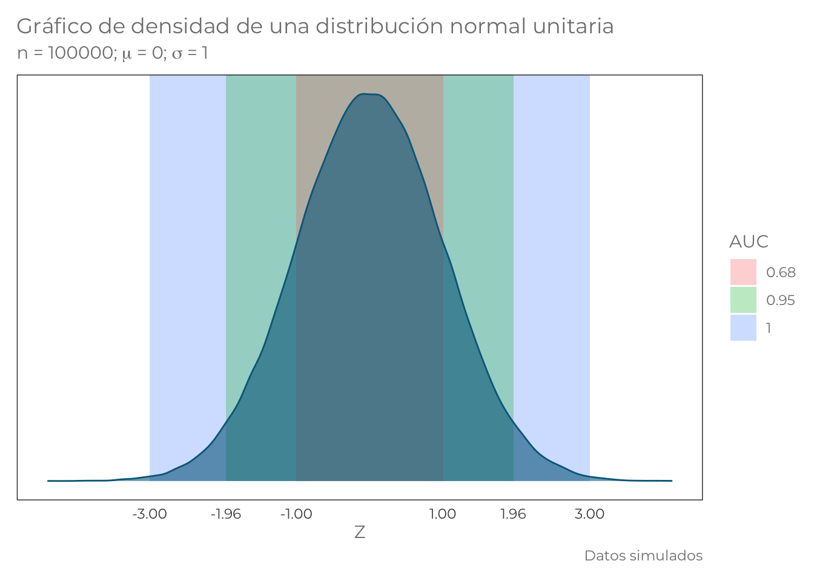
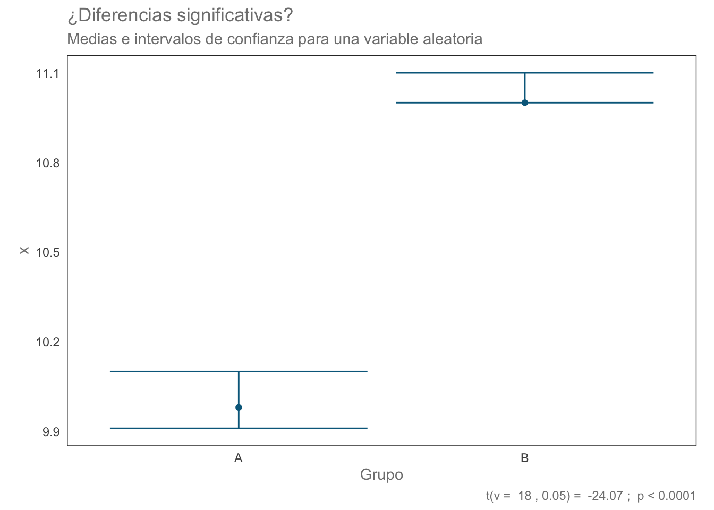

A <- rnorm(10, 10, 0.1)
B <- rnorm(10, 11, 0.1)Si solamente formamos un data.frame, este no estará codificado, por lo que será necesario hacer cierta manipulación de los datos
data.frame(A, B)¿Cómo pasarías a la forma codificada (larga)?
Una alternativa es esta:
df1 <- data.frame(grupo = "A", v1 = A)
df1 <- rbind(df1, data.frame(grupo = "B", v1 = B))
df1Algunas otras opciones son:
# Código
# Matrices SOLO pueden contener datos de un tipo (si hay caracteres, los números también se transformarán a caractér)
#mat <- matrix(rep(1, 10), rep(2, 10), A, B, ncol = 2) # Error
#----------------------
mat <- matrix(c(rep(1, length(A)), rep(2, length(B)), A, B), ncol = 2)
mat <- as.data.frame(mat)
mat$V1 <- as.character(mat$V1)
mat$V1[mat$V1 == "1"] <- "A"
mat$V1[mat$V2 == "2"] <- "B"
#-----------------------
# Variante
mat <- matrix(c(rep(1, length(A)), rep(2, length(B)), A, B), ncol = 2)
mat <- as.data.frame(mat)
mat$V1 <- as.character(mat$V1)
mat$V1 <- ifelse(mat$V1 == "1", "A", "B")
#-------------------------
# Variante:
mat <- matrix(c(rep(1, length(A)), rep(2, length(B)), A, B), ncol = 2)
mat <- as.data.frame(mat)
mat$V1 <- LETTERS[mat$V1]
matEstimar las medias de cada grupo
#Medias
mean(A)## [1] 9.981399mean(B)## [1] 11.02173mean(mat$V1[mat$V1 == "A"]) # Error, poner atención a la columna que se está seleccionando## Warning in mean.default(mat$V1[mat$V1 == "A"]): argument is not numeric or
## logical: returning NA## [1] NAmean(mat$V2[mat$V1 == "A"])## [1] 9.981399mean(mat$V2[mat$V1 == "B"])## [1] 11.02173Estimar los intervalos de confianza
rcompanion::groupwiseMean(v1~grupo, data = df1 , conf = 0.95)rcompanion::groupwiseMean(V2~V1, data = mat , conf = 0.95)library(ggplot2)
n <- 100000
v1 <- data.frame(var = rnorm(n))
sds <- data.frame(xf = c(3, 1.96, 1))
sds["AUC"] <- NA
for (i in seq_along(sds$xf)) {
sds$AUC[i] <- as.character(round(1 - length(v1$var[(v1$var < -sds$xf[i]) | (v1$var > sds$xf[i])])/n, 2))
}
sdsuni.norm <- ggplot() +
geom_rect(data = sds, aes(xmin = -xf, xmax = xf,
ymin = 0, ymax = Inf,
fill = AUC), alpha = 0.3) +
geom_density(data = v1, aes(var),
kernel = "gaussian",
colour = "deepskyblue4", fill = "deepskyblue4",
alpha = 0.6) +
labs(x = "Z",
y = element_blank(),
title = "Gráfico de densidad de una distribución normal unitaria",
subtitle = expression(paste("n = 100000; ", mu, " = 0; ", sigma, " = 1")),
caption = "Datos simulados") +
theme(panel.grid.minor = element_blank(),
panel.grid.major = element_blank(),
panel.background = element_blank(),
axis.line = element_blank(),
aspect.ratio = 1/1.61,
axis.ticks = element_blank(),
text = element_text(family = "Montserrat", colour = "gray50")
) +
scale_y_continuous(breaks = NULL) +
scale_x_continuous(breaks = c(-sds$xf, sds$xf))
uni.norm
t = valor del estadístico de prueba, indica la posición en el eje X en el gráfico de la distribución p-value = Es la proporción de la distribución fuera del área del valor crítico; es decir, 1-AUC hasta ese valor crítico. df = grados de libertad de la muestra. Representan el número de observaciones independientes; es decir, “retiramos la media”. Ejemplo: 10, 11, 12. La media es 11; por lo tanto, la cantidad de observaciones independientes de la media es 2.
t.test(V2~V1, data = mat, var.equal = T, paired = F)##
## Two Sample t-test
##
## data: V2 by V1
## t = -24.069, df = 18, p-value = 3.855e-15
## alternative hypothesis: true difference in means is not equal to 0
## 95 percent confidence interval:
## -1.1311375 -0.9495187
## sample estimates:
## mean in group A mean in group B
## 9.981399 11.021728Podemos también presentar los resultados de manera gráfica. Para ello necesitaremos guardar los resultados de nuestra prueba t.test en un objeto y extraer la información de ahí. ¿Cómo verificamos cuál es el tipo de objeto?
ttest <- t.test(V2 ~ V1, data = mat, var.equal = T, paired = F)
typeof(ttest)## [1] "list"El objeto es una lista NOMBRADA, por lo que podemos acceder a su contenido utilizando el operador de [[]] (posición numérica o “nombre”) o el operador $. Guardemos el valor de p en un nuevo objeto para incluirlo en la gráfica:
p_val <- ttest$p.value
p_val## [1] 3.85482e-15Construyamos y grafiquemos los intervalos de confianza para la media de cada grupo (95%):
ICs <- rcompanion::groupwiseMean(v1~grupo, data = df1, conf = 0.95)
error.plot <- ggplot(data = ICs, aes(x = grupo, y = Mean)) +
geom_point(color = "deepskyblue4") +
geom_errorbar(aes(ymin = Trad.lower, ymax = Trad.upper), color = "deepskyblue4") +
theme(panel.grid.minor = element_blank(),
panel.grid.major = element_blank(),
panel.background = element_blank(),
axis.line = element_blank(),
aspect.ratio = 1/1.61,
axis.ticks = element_blank(),
text = element_text(colour = "gray50"),
legend.position = "none") +
labs(x = "Grupo",
y = "x",
title = "¿Diferencias significativas?",
subtitle ="Medias e intervalos de confianza para una variable aleatoria",
caption = paste("t(v = ", ttest$parameter, ", 0.05) = ", round(ttest[["statistic"]] ,2), "; ", ifelse(p_val < 0.0001, "p < 0.0001", paste("p = ", p_val))))
error.plot
Carguemos los datos, que en este caso están contenidos en un archivo de excel.
dependientes <- openxlsx::read.xlsx("data/datos_t.xlsx", sheet = 2)
dependientesNotar que está en formato compacto (no codificado), por lo tanto hay que transformarla:
dependientes.m <- reshape2::melt(dependientes, value.name = "LT", na.rm = T, variable.name = "periodo")## No id variables; using all as measure variablesdependientes.mPrueba
t.test(LT~periodo, data = dependientes.m, paired = T)##
## Paired t-test
##
## data: LT by periodo
## t = -6.1115, df = 9, p-value = 0.0001768
## alternative hypothesis: true difference in means is not equal to 0
## 95 percent confidence interval:
## -24.11459 -11.08541
## sample estimates:
## mean of the differences
## -17.6Realizar la prueba t con los datos de la hoja 1 del archivo, la cual contiene datos de dos muestras independientes. La tarea consiste en cargar los datos, realizar la prueba y presentar un gráfico en el que se reporten los resultados.